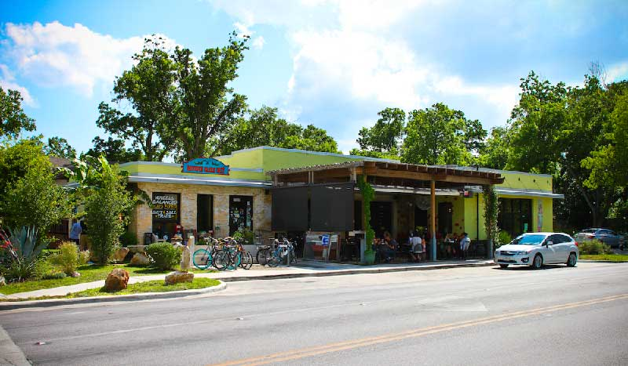

Bouldin Creek Cafe was born out of both the desire to build community and the desire to preserve the character of a once sleepy college town in the midst of growth and development.
At first, a small menu was provided as a means of bringing people together. As people relished our unique vegetarian offerings, we evolved into a full scale vegetarian eatery and reputable coffee bar.
We now provide fairly priced, wholesome food and have shown both vegetarians and non vegetarians that veggie food can be flavorful and satisfying.
We prepare our food from scratch and to order.
While you wait, enjoy a range of free publications, take a game or book off our shelf, or check out the monthly rotating art show.
We are a dog friendly restaurant. Please keep your dog on a leash.
Expect slightly longer waits during special events like SXSW and ACL.